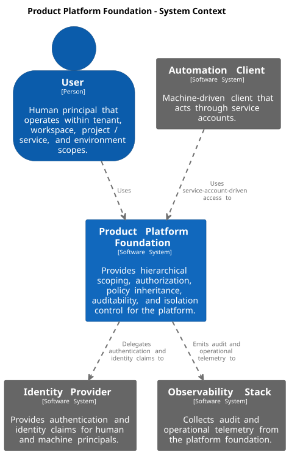
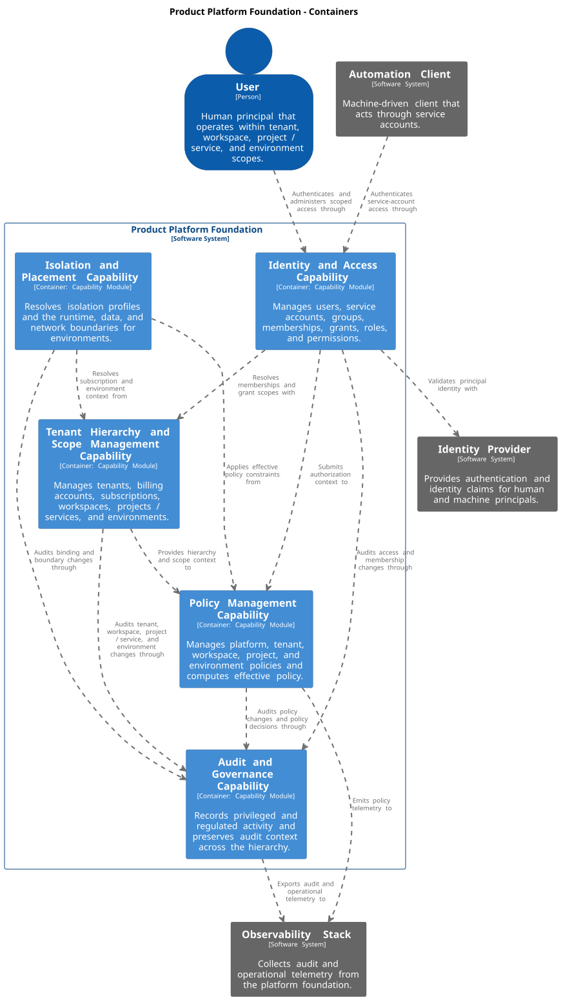
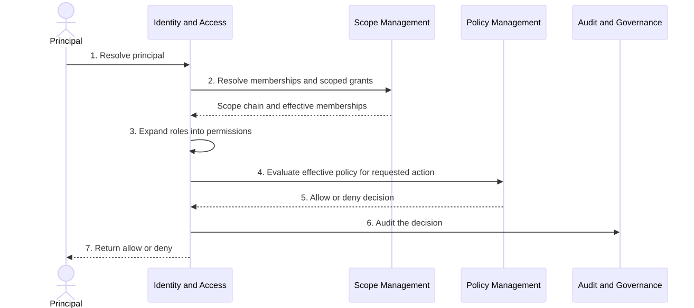

Product Platform architecture documentation with arc42, C4 model, and documentation as code.
1. Introduction and Goals
This section summarizes the architectural drivers for the Product Platform Foundation. It focuses on the hierarchical platform model, the governance and authorization capabilities that must be shared across all tenants, and the quality goals that drive the resulting design.
1.1. Requirements Overview
1.1.1. Problem and Goal
The Product Platform Foundation provides the shared architecture for identity and access, policy inheritance, auditability, hierarchical scope management, and tenant isolation. It treats Platform → Tenant → Workspace → Project / Service → Environment as the canonical business hierarchy.
1.1.2. Business Goals
The platform foundation should help the organization:
-
manage human and machine principals consistently across all scopes
-
apply one hierarchical governance model to shared, silo, and hybrid tenants
-
separate authorization, policy, and audit concerns without losing traceability
-
support subscription plans without coupling pricing directly to hosting isolation
-
make privileged and regulated activity auditable across the full hierarchy
-
allow stricter controls at lower scopes without weakening mandatory parent controls
1.1.3. Requirement Clusters
| Cluster | Description |
|---|---|
Identity and access foundation |
Provide principals, memberships, grants, roles, permissions, and scoped access decisions for tenant, workspace, project / service, and environment boundaries. |
Hierarchical scope governance |
Manage the canonical hierarchy of tenant, workspace, project / service, and environment, including inherited defaults, audit context, and scope-aware access. |
Policy and audit baseline |
Maintain a platform policy baseline plus tenant, workspace, project, and environment policies, and audit privileged or regulated activity across all scopes. |
Isolation and placement |
Support shared, silo, and hybrid isolation without changing the business hierarchy by resolving runtime, data, and network boundaries from subscription and isolation information. |
1.1.4. Core Tasks and Capabilities
The architecture is primarily expected to support the following tasks:
-
authenticate a user or service account and resolve principal identity
-
resolve memberships and scoped grants for tenant, workspace, project / service, and environment boundaries
-
expand roles into fine-grained permissions for the requested action
-
evaluate effective policy after permission lookup and before access is allowed
-
record privileged changes, secret access, production access, deployments, and billing or administration changes in the correct audit context
-
resolve runtime, data, and network isolation from the subscription’s subscription plan and isolation profile
1.1.5. Requirement Sources
The repository does not contain linked external requirements or backlog exports. This chapter therefore uses local architecture evidence and explicit source-reference slots:
| Reference ID | Source | Status / Notes |
|---|---|---|
REQ-SRC-001 |
External product or platform requirements specification |
Not yet linked in this repository. Reserve this slot for an approved requirements source. |
REQ-SRC-002 |
External backlog or work-item system |
Not yet linked in this repository. Reserve this slot for stable epic, feature, or story references. |
REQ-EVID-001 |
|
Current repo evidence for the platform foundation context and capability-module decomposition. |
REQ-EVID-002 |
This arc42 book |
Current source of truth for the hierarchical domain model, policy model, audit model, and isolation model. |
1.2. Quality Goals
The top quality goals for this architecture are intentionally limited to five. Section 4 summarizes the strategic responses and Section 10 contains the fuller quality model and scenarios.
| Priority | Quality Goal | Scenario |
|---|---|---|
1 |
Security and Least Privilege |
When a user or service account requests a privileged action, the platform should resolve only the permissions granted at the relevant scope and deny any action that is not explicitly allowed. |
2 |
Policy Enforceability |
When a child scope defines a local rule, the platform should apply inherited parent policy and allow the child to tighten controls without weakening mandatory parent requirements. |
3 |
Auditability and Traceability |
When a privileged or regulated action occurs, the platform should record it with the correct scope, actor, decision context, and resulting effect. |
4 |
Isolation Flexibility |
When two tenants use different hosting models, they should keep the same business hierarchy while the platform resolves different runtime, data, and network boundaries for shared, silo, or hybrid isolation. |
5 |
Evolvability |
When the platform adds a new governed capability or stricter control, it should extend the existing hierarchy, policy, and authorization model instead of introducing a separate parallel model. |
Operability remains important, but it is treated as a detailed quality requirement in Section 10 rather than a top-five introductory goal.
1.3. Stakeholders
| Role | Expectation |
|---|---|
Platform Administrator |
Needs clear rules for platform baseline policy, scope hierarchy, audit coverage, and isolation behavior across all tenants. |
Security and Compliance Stakeholder |
Needs assurance that least privilege, policy inheritance, audit logging, retention, and regulated access controls are built into the platform model. |
Product Engineer |
Needs a shared authorization, policy, and hierarchy model that can be reused consistently when new services and environments are introduced. |
Software Architect |
Needs a clear and extensible foundation model for scopes, inheritance, isolation, and governance so future capabilities do not fragment the platform. |
Product Owner |
Needs a compact explanation of why the platform uses one hierarchy for all tenants, how subscription plans differ from isolation, and how governance requirements shape the architecture. |
2. Architecture Constraints
The following constraints are fixed by the chosen platform foundation model and by the documentation/tooling approach used in this repository.
| Category | Constraint | Consequence for the Architecture |
|---|---|---|
Core domain structure |
The canonical hierarchy is |
All access, policy, audit, inheritance, defaults, and isolation reasoning must follow this hierarchy rather than introducing a second parallel business structure. |
Authorization model |
Access must follow |
Roles remain reusable bundles, permissions remain the smallest action unit, and grants must always be scoped to tenant, workspace, project / service, or environment. |
Principal model |
The supported principals are user, service account, and group. |
Human and machine access must be represented consistently, while group membership provides aggregation without replacing scoped grants. |
Policy model |
Policy is distinct from authorization and inherits downward from platform baseline to tenant, workspace, project, and environment policies. |
Permission lookup happens before policy evaluation, and lower scopes may tighten controls but must not weaken mandatory parent rules. |
Isolation model |
Shared, silo, and hybrid tenants must keep the same business hierarchy. |
Isolation differences are expressed through isolation profile plus runtime, data, and network boundaries, not through a second tenant model. |
Commercial model |
Subscription plan and isolation profile are separate concepts. |
Pricing and entitlement may influence isolation choices, but they cannot be treated as the same field or the same architectural concern. |
Audit model |
Privileged and regulated actions must be auditable at the correct scope. |
Membership changes, grants, policy changes, production access, secret access, deployments, and billing or administration changes must preserve actor and scope context. |
Documentation and generation |
The repository standardizes on AsciiDoc, arc42, docToolchain, Structurizr DSL, and generated ADR includes. |
The maintained source must stay in AsciiDoc, C4 diagrams must come from |
3. Context and Scope
3.1. Business Context

The system boundary in this repository is the Product Platform Foundation. It provides the shared governance architecture for principals, scopes, policy inheritance, auditability, and isolation control.
| Communication Partner | Inputs to the Platform Foundation | Outputs from the Platform Foundation |
|---|---|---|
User |
Human-initiated access, administration actions, membership changes, grant requests, policy changes, and scoped operational actions. |
Authorization decisions, hierarchy-aware access, policy-enforced outcomes, and scope-specific audit context. |
Automation Client |
Machine-initiated access through service accounts, including deployment and operational automation. |
Service-account authorization decisions, scoped access to projects / services and environments, and audited machine activity. |
Identity Provider |
Identity claims and authentication results for users and service accounts. |
Authentication and identity-validation requests from the platform foundation. |
Observability Stack |
No direct business command input is modeled. |
Audit and operational telemetry emitted by the platform foundation. |
3.2. Technical Context
The technical context maps the same communication partners to technical interfaces and channels. Concrete API and infrastructure protocols are intentionally left open because they are not yet fixed by the architecture definition.
| Partner | Interface / Channel | Purpose | Notes |
|---|---|---|---|
User |
Platform Foundation access interface |
Initiate scope administration, access changes, policy changes, and governed operations. |
The exact user-facing protocol and UI structure are intentionally unspecified in the repository. |
Automation Client |
Service-account-driven platform interface |
Initiate machine-to-platform calls for governed project / service and environment actions. |
The architecture requires service-account access, but not a specific API protocol or client technology. |
Identity Provider |
Authentication and identity-claims integration |
Validate principal identity and return claims used during authorization and policy evaluation. |
The identity exchange is required, but protocol details are intentionally unspecified. |
Observability Stack |
Telemetry export channel |
Receive audit and operational signals for monitoring, troubleshooting, and governance evidence. |
The architecture proves telemetry export, but not a concrete telemetry protocol or product choice. |
4. Solution Strategy
This section summarizes the small number of strategic decisions that shape the platform foundation architecture. The detailed structure appears in Section 5, the behavior in Section 6, and the cross-cutting rules in Section 8.
| Decision Area | Strategy | Why It Matters |
|---|---|---|
Hierarchy |
Use one canonical hierarchy: platform, tenant, workspace, project / service, environment. |
Keeps governance, access, inheritance, and audit consistent across the platform instead of fragmenting the model. |
Authorization |
Resolve access through principal, membership, grant, role, permission, and scope. |
Separates identity, scope membership, and reusable permission bundles while supporting fine-grained access control. |
Policy |
Treat policy as distinct from authorization and evaluate it after permission lookup. |
Allows mandatory controls, approval requirements, retention rules, trusted-network requirements, and regional restrictions to be enforced consistently. |
Isolation |
Keep the same business hierarchy for all tenants and express hosting differences through isolation profile plus runtime, data, and network boundaries. |
Supports shared, silo, and hybrid operation without inventing separate business models for different hosting choices. |
Audit and governance |
Make audit context a first-class concern across memberships, grants, policy changes, production access, secrets, deployments, and billing or administration changes. |
Supports compliance, traceability, and operational review across the entire hierarchy. |
Commercial model |
Separate subscription plan from isolation profile. |
Prevents pricing concerns from being confused with the technical isolation model. |
5. Building Block View
5.1. Whitebox Overall System: Product Platform Foundation

The Product Platform Foundation is decomposed into five capability-oriented building blocks. They separate identity and access, policy, hierarchy management, audit, and isolation logic without changing the business hierarchy seen by tenants and internal teams.
- Motivation
-
The decomposition keeps business hierarchy, authorization, policy inheritance, auditability, and isolation resolution explicit instead of mixing them into one undifferentiated service or inventing different models for shared and silo tenants.
- Contained Building Blocks
| Building Block | Responsibility |
|---|---|
Identity and Access Capability |
Manages principals, groups, memberships, grants, roles, and permissions, and resolves the authorization context for a requested action. |
Policy Management Capability |
Maintains platform baseline policy plus scoped tenant, workspace, project, and environment policies, and computes effective policy. |
Tenant Hierarchy and Scope Management Capability |
Maintains tenants, billing accounts, subscriptions, workspaces, projects / services, and environments as the canonical scope hierarchy. |
Audit and Governance Capability |
Records privileged and regulated activity, preserves scope context, and exports audit and operational telemetry. |
Isolation and Placement Capability |
Resolves isolation profile and the runtime, data, and network boundaries used by each environment. |
- Important Relationships
| Relationship | Description |
|---|---|
Identity and Access → Tenant Hierarchy and Scope Management |
Memberships and grants are meaningful only when they can be resolved against the hierarchy and scope chain. |
Identity and Access → Policy Management |
Effective policy is evaluated after permissions are resolved and before access is allowed. |
Policy Management → Audit and Governance |
Policy decisions and policy changes must be auditable at the correct scope. |
Isolation and Placement → Tenant Hierarchy and Scope Management |
Isolation resolution depends on the subscription, project / service, and environment context. |
Isolation and Placement → Policy Management |
Placement and boundary choices must respect inherited policy constraints such as approved regions or network restrictions. |
All capability modules → Audit and Governance |
Privileged and regulated events must preserve actor, scope, and decision context. |
5.2. Platform Hierarchy

| Scope Level | Purpose |
|---|---|
Platform |
Defines the global baseline for policy, governance, and shared architectural defaults. |
Tenant |
Represents the governed organizational or customer boundary, including subscription and tenant-specific policy and audit context. |
Workspace |
Groups related work within a tenant and provides a narrower boundary for membership, policy, and audit context. |
Project / Service |
Represents the governed delivery or service boundary inside a workspace and remains a single unified scope level in this architecture. |
Environment |
Represents the deployment-facing operational boundary where effective policy, audit, and isolation become most concrete. |
5.3. Principal and Access Model
| Element | Purpose |
|---|---|
User |
Human principal that performs governed actions in the hierarchy. |
Service Account |
Machine principal used for automation and service-to-platform access. |
Group |
Collection of principals used to manage access at scale. |
Membership |
Association that answers who belongs to which scope or organizational context. |
Grant |
Assignment of a role at a specific scope. Grants are always scoped to tenant, workspace, project / service, or environment. |
Role |
Reusable permission bundle that expresses a meaningful access profile. |
Permission |
Smallest action unit, such as |
5.4. Isolation and Placement Model
| Element | Purpose |
|---|---|
Subscription Plan |
Commercial entitlement such as Standard, Premium, or Enterprise. |
Isolation Profile |
Technical isolation intent, such as Shared, Silo, or Hybrid. |
Runtime Binding |
Resolves where an environment runs, for example shared runtime allocation or dedicated runtime allocation. |
Data Boundary |
Resolves how data is isolated, for example shared partition or dedicated store. |
Network Boundary |
Resolves the network isolation level, for example shared or dedicated network boundary. |
6. Runtime View
This section shows three representative flows that are architecturally relevant for the platform foundation: authorization, policy inheritance, and isolation resolution.
6.1. Authorization Decision Flow

-
Resolve the acting principal as either a user or a service account.
-
Resolve memberships and scoped grants for tenant, workspace, project / service, and environment.
-
Expand the granted role set into fine-grained permissions.
-
Evaluate effective policy after permission lookup.
-
Return an allow or deny decision and audit the result.
6.2. Policy Inheritance and Effective Policy Evaluation
-
Start with the platform policy baseline.
-
Apply tenant, workspace, project, and environment policy in hierarchy order.
-
Preserve mandatory parent controls throughout evaluation.
-
Allow lower scopes to tighten controls, such as requiring approval or restricting production access to a narrower group.
-
Use the resulting effective policy during authorization and execution decisions.
6.3. Isolation and Binding Resolution

-
Resolve the environment and its parent subscription context.
-
Read the subscription’s subscription plan and isolation profile.
-
Evaluate policy constraints that can affect placement, region, network, retention, or access posture.
-
Resolve runtime binding, data boundary, and network boundary together.
-
Produce the effective isolation outcome for the environment without changing the business hierarchy.
7. Deployment View
The architecture defines logical isolation profiles rather than a fixed concrete infrastructure topology. This section therefore describes how environments are placed and isolated in shared, silo, and hybrid modes, while leaving concrete hosting technology intentionally open.
7.1. Logical Isolation Profiles

| Isolation Profile | Runtime Binding | Data Boundary | Network Boundary | Typical Use |
|---|---|---|---|---|
Shared |
Shared runtime allocation |
Shared partition or equivalent multi-tenant storage boundary |
Shared network boundary |
Cost-efficient default for tenants that do not require dedicated isolation. |
Hybrid |
Shared for some environments, dedicated for others |
Shared or dedicated depending on environment and policy |
Shared or dedicated depending on environment and policy |
Tenants that need stronger isolation only for selected workloads or environments, such as production. |
Silo |
Dedicated runtime allocation |
Dedicated store |
Dedicated network boundary |
Tenants with strict isolation, regulatory, or contractual requirements. |
7.2. Deployment Assumptions and Explicit Gaps
The following deployment facts remain intentionally open in this architecture:
-
the concrete runtime platform, cluster, account, or subscription model
-
the concrete storage technologies behind shared partitions and dedicated stores
-
the concrete network technologies behind shared and dedicated network boundaries
-
the concrete regional topology and ingress or egress implementations
What is fixed is the logical model:
-
every tenant keeps the same business hierarchy regardless of isolation profile
-
isolation is resolved from subscription and policy information
-
runtime, data, and network boundaries may differ even when the tenant hierarchy does not
-
hybrid isolation is a first-class case rather than an exception
8. Cross-cutting Concepts
This section defines the core concepts that are reused across the hierarchy, authorization model, runtime behavior, and quality requirements.
8.1. Principal and Scope Model
The architecture treats users and service accounts as principals and groups as a scaling mechanism for access management. Membership determines who belongs to which scope context, while the scope hierarchy remains fixed as platform, tenant, workspace, project / service, and environment.
8.2. Grant, Role, and Permission Model
Access is granted through scoped grants. A grant assigns a role at a specific scope, and roles expand into permissions such as workspace.view, project.update, environment.deploy, environment.secret.read, policy.manage, or audit.view. Permissions remain the smallest action unit and grants remain the scoped assignment mechanism.
8.3. Policy Versus Authorization
Policy is not the same concern as authorization. Authorization answers whether the acting principal has the required permission at the requested scope. Policy answers whether the action is still allowed under inherited rules such as MFA requirements, production approval requirements, trusted-network restrictions, retention requirements, or approved-region restrictions.
8.4. Inheritance Model
The hierarchy inherits policy, access scope interpretation, audit context, and defaults downward from platform to tenant, workspace, project / service, and environment. Lower scopes may tighten controls, but they must not weaken mandatory parent rules.
8.5. Audit Model
Auditability is a first-class concept rather than an afterthought. Membership changes, grants and revocations, policy changes, production access, secret access, deployments, and billing or administration changes must preserve actor, scope, and decision context so they can be reviewed later.
8.6. Isolation Model and Tier Separation
Shared, silo, and hybrid are technical isolation profiles, not alternative business hierarchies. The subscription plan expresses what was purchased, while the isolation profile expresses how the tenant is hosted. Runtime binding, data boundary, and network boundary resolve the actual technical isolation for each environment.
9. Architecture Decisions
The platform foundation currently depends on the following accepted architecture decisions.
9.2. Adopt architecture documentation standards and tooling
9.2.2. Standardize architecture documentation approach for the Product Platform
-
Deciders: Architecture Team
-
Date: 2026-03-29
9.2.3. Context and Problem Statement
Our architecture documentation needs to stay consistent, reviewable, and easy to evolve as the Product Platform grows. Without shared standards and tooling, documentation drifts in structure and quality and becomes difficult to maintain.
9.2.4. Decision Drivers
-
Consistent architecture structure across teams
-
Documentation-as-code workflow in the same repository as implementation artifacts
-
Ability to generate diagrams and publish documentation automatically
-
Traceable architectural decisions over time
9.2.5. Considered Options
-
Use arc42 + C4 + docToolchain + Structurizr DSL + ADR/TDR records in this repository
-
Use ad-hoc Markdown files and manually maintained images
9.2.6. Decision Outcome
Chosen option: "Use arc42 + C4 + docToolchain + Structurizr DSL + ADR/TDR records in this repository", because it provides a structured, automatable, and version-controlled documentation baseline that fits our engineering workflow.
9.3. Adopt hierarchical scope and inheritance model
9.3.2. Standardize the platform hierarchy and inheritance rules
-
Deciders: Architecture Team
-
Date: 2026-04-02
9.3.3. Context and Problem Statement
The platform needs one consistent way to reason about scope, access, policy, audit context, and defaults. Without a shared hierarchy, different teams would likely invent incompatible models for tenant, workspace, service, and environment governance.
9.3.4. Decision Drivers
-
Consistent scope model across the platform
-
Fine-grained authorization with reusable roles
-
Explicit policy inheritance from platform to environment
-
Auditable privileged and regulated activity at every scope
-
Ability to evolve the platform without introducing parallel hierarchies
9.3.5. Considered Options
-
Adopt one hierarchical scope model with downward inheritance
-
Allow different hierarchies for different product or isolation models
9.3.6. Decision Outcome
Chosen option: "Adopt one hierarchical scope model with downward inheritance", because it creates a single architecture for access, policy, audit, and defaults.
Positive Consequences
-
The platform has one canonical hierarchy: Platform, Tenant, Workspace, Project / Service, Environment.
-
Grants can be scoped consistently to tenant, workspace, project / service, or environment.
-
Policy, audit context, and defaults can inherit downward in a predictable way.
-
Shared, silo, and hybrid tenants can use the same business hierarchy.
9.3.7. Pros and Cons of the Options
9.4. Separate subscription plan from isolation profile and boundary bindings
9.4.2. Distinguish customer entitlement from technical isolation
-
Deciders: Architecture Team
-
Date: 2026-04-02
9.4.3. Context and Problem Statement
The platform must support tenants that buy different subscription plans and also require different isolation models. If pricing and isolation are treated as the same field, the architecture becomes harder to reason about and less flexible for shared, silo, and hybrid deployment choices.
9.4.4. Decision Drivers
-
Clear separation between business entitlement and technical isolation
-
Support for shared, silo, and hybrid operating models
-
Ability to change placement and isolation without changing the tenant hierarchy
-
Better policy evaluation for runtime, data, and network boundaries
9.4.5. Considered Options
-
Separate subscription plan from isolation profile and boundary bindings
-
Use one combined concept for pricing and isolation
9.4.6. Decision Outcome
Chosen option: "Separate subscription plan from isolation profile and boundary bindings", because it preserves one tenant model while allowing hosting isolation to vary independently.
Positive Consequences
-
A subscription can express both commercial entitlement and technical isolation intent.
-
The same tenant hierarchy works for shared, silo, and hybrid tenants.
-
Runtime binding, data boundary, and network boundary can be resolved independently from pricing.
-
Hybrid isolation can be modeled without redefining the business hierarchy.
9.5. Proposed Decisions To Resolve Next
The following proposed ADRs capture the next architectural decisions that should be resolved to make the platform foundation implementation-ready.
9.6. Define effective-access evaluation semantics
9.6.2. Standardize how effective access is resolved across scopes
-
Deciders: Architecture Team
-
Date: 2026-04-03
9.6.3. Context and Problem Statement
The platform foundation defines the authorization chain as Principal → Membership → Grant → Role → Permission → Scope.
That model establishes the core building blocks, but it is not sufficient on its own to guarantee consistent implementation.
Without an explicit decision, teams could still implement materially different behavior for:
-
how direct grants and group-derived grants combine
-
how broader-scope grants apply to descendant scopes
-
whether authorization supports explicit deny semantics
-
how access resolution is separated from policy evaluation
-
which decision context must be captured for audit
The platform therefore needs one normative effective-access model that every implementation can follow.
9.6.4. Decision Drivers
-
Consistent authorization behavior across all platform capabilities
-
Least-privilege enforcement with default deny
-
Predictable scope resolution across the hierarchy
-
Clear separation between authorization and policy
-
Testable allow and deny behavior
-
Auditable authorization decisions
9.6.5. Considered Options
-
Resolve access through additive grants only, with policy handling all denials and restrictions
-
Support additive grants plus explicit deny semantics
-
Resolve access by nearest-scope precedence only
9.6.6. Decision Outcome
Chosen option: "Resolve access through additive grants only, with policy handling all denials and restrictions", because it keeps authorization semantics predictable, preserves default deny, and keeps restrictive rules in the policy layer where the architecture already places them.
Normative Authorization Model
-
Authorization uses default deny.
-
An action is eligible for authorization only if at least one matching grant expands to the required permission at the requested scope or one of its ancestor scopes.
-
Effective permissions are the union of all matching direct and group-derived grants.
-
The authorization layer does not support explicit deny grants.
-
Policy evaluation happens only after permission resolution and can still deny an otherwise authorized action.
Normative Scope-Matching Rules
-
A tenant-scoped grant applies to that tenant and all descendant workspaces, projects / services, and environments.
-
A workspace-scoped grant applies to that workspace and all descendant projects / services and environments.
-
A project / service-scoped grant applies to that project / service and all descendant environments.
-
An environment-scoped grant applies only to that environment.
-
Access propagation is interpreted through the hierarchy during evaluation. Grants are not copied to child scopes.
Normative Group Rules
-
Groups aggregate principals for access management.
-
Users and service accounts may be members of groups.
-
Groups do not contain other groups in the first implementation.
-
Group-derived grants are evaluated the same way as direct grants once group membership has been resolved.
Effective-Access Evaluation Algorithm
-
Resolve the acting principal.
-
Resolve direct memberships for the principal at the relevant scopes.
-
Resolve flat group memberships for the principal.
-
Collect direct grants and group-derived grants whose scopes match the requested scope or one of its ancestor scopes.
-
Expand the roles from those grants into permissions.
-
Union the resulting permissions into one effective permission set.
-
If the required permission is absent, deny the action and audit the denied result.
-
If the required permission is present, evaluate effective policy for the requested action and scope.
-
If policy denies the action, deny it and audit the policy-driven denial with policy context.
-
If policy allows the action, allow it and audit the successful decision.
Public Behavior Locked by This Decision
-
Authorization input must include the acting principal, the requested permission, and the requested scope.
-
Authorization output must include allow or deny plus enough decision context for audit and later review.
-
Valid grant scopes remain limited to tenant, workspace, project / service, and environment.
-
Authorization answers whether a valid matching grant provides the required permission at the requested scope.
-
Policy answers whether the action is still allowed under inherited rules after permission resolution.
-
Every authorization decision must preserve principal, resolved scope, matching grants or absence of grants, resolved permission, policy outcome when evaluated, and final allow or deny result.
Positive Consequences
-
Teams can implement one consistent effective-access model across the platform.
-
Direct and group-derived access remains understandable because both use additive union semantics.
-
Default deny remains simple: missing permission means denied access.
-
Restrictive controls such as MFA, approval, trusted-network checks, or region rules stay in the policy layer.
-
Audit records can capture a clear sequence from permission resolution to policy outcome to final decision.
Negative Consequences
-
The platform cannot express authorization-layer deny exceptions in the first implementation.
-
Group support stays intentionally limited because nested groups are not supported.
-
Broader-scope grants must be designed carefully to avoid over-entitlement.
-
Teams that want custom precedence or propagation behavior must propose a new ADR instead of adding local rules.
Non-Goals and Deferred Decisions
-
No explicit deny grants are supported.
-
No nested groups are supported.
-
No nearest-scope-only override model is used.
-
No role-specific propagation flags are supported.
-
Any future need for explicit deny semantics, nested groups, or alternate precedence rules requires a follow-up ADR.
9.6.7. Consequences
-
Section 6 should reflect the exact authorization algorithm defined by this ADR.
-
Section 8 should describe additive union semantics, downward scope interpretation, and flat group behavior explicitly.
-
Section 10 should add scenarios that cover direct versus group-derived grants and ancestor-scope matching.
-
Implementations should add automated tests for the validation scenarios below before relying on local authorization behavior.
9.6.8. Validation Scenarios
-
A user with a direct workspace grant for
project.viewis allowed to request that permission for a project inside that workspace before policy evaluation. -
A user with no matching grant at the requested scope or any ancestor is denied by default and the denial is audited.
-
A user who receives the required permission only through a group-derived grant is allowed if policy also allows the action.
-
A user with both direct and group-derived grants receives the union of those permissions with no special precedence rule.
-
A tenant-scoped grant is recognized when the request targets a descendant environment.
-
An environment-scoped grant does not authorize access to a sibling environment.
-
A request with the required permission is still denied when policy requires MFA or approval and the requirement is not satisfied.
-
A parent-scope grant can still be blocked by a stricter child-scope policy.
-
Nested groups are rejected or treated as unsupported in the first implementation.
9.6.9. Pros and Cons of the Options
Resolve access through additive grants only, with policy handling all denials and restrictions
-
Good, because authorization behavior stays simple and consistent across scopes.
-
Good, because restrictive business and security rules remain in the policy layer.
-
Good, because audit reasoning can distinguish missing permission from policy denial.
-
Bad, because the model does not support explicit deny exceptions in the authorization layer.
Support additive grants plus explicit deny semantics
-
Good, because deny exceptions can be expressed directly in authorization.
-
Bad, because precedence and merge behavior become more complex across direct, group, and ancestor-scope grants.
-
Bad, because the boundary between authorization and policy becomes less clear.
9.7. Define audit evidence and retention architecture
9.7.2. Standardize how audit evidence is stored, retained, and protected
-
Deciders: Architecture Team
-
Date: 2026-04-03
9.7.3. Context and Problem Statement
The platform foundation requires auditability for memberships, grants, policy changes, production access, secret access, deployments, and billing or administration changes. The architecture also integrates with an observability stack, but operational telemetry is not automatically sufficient as compliance-grade audit evidence.
Without an explicit decision, teams could still implement materially different behavior for:
-
the system of record for audit evidence
-
the boundary between canonical evidence and operational telemetry
-
retention ownership and enforcement
-
immutability and correction behavior
-
export and reporting expectations for audit review
-
commit guarantees for privileged or regulated actions
The platform therefore needs one normative audit evidence model that every implementation can follow.
9.7.4. Decision Drivers
-
Compliance and governance expectations
-
Durable retention of regulated activity
-
Traceable privileged actions across all scopes
-
Clear separation between audit evidence and convenience telemetry
-
Tamper resistance and evidence integrity
-
Support for later operational, security, and compliance review
9.7.5. Considered Options
-
Use the observability stack as the only audit system of record
-
Use a dedicated audit store and export selected signals to observability
-
Use a mixed model with audit-grade storage plus operational summaries
9.7.6. Decision Outcome
Chosen option: "Use a dedicated audit store and export selected signals to observability", because it keeps compliance-grade evidence durable and authoritative while still supporting operational visibility through telemetry exports.
Normative Audit Evidence Model
-
The platform uses a dedicated audit store as the canonical system of record for audit evidence.
-
The observability stack receives selected audit signals and operational summaries, but it is not the authoritative evidence store.
-
Audit evidence is append-only after commit.
-
Committed audit records must not be overwritten in place.
-
Corrections, reconciliations, or enrichment must be represented by linked follow-up records rather than mutation of original records.
-
Canonical audit evidence must preserve actor, scope, action, decision, and outcome context.
Normative Retention Model
-
Audit retention is enforced by the canonical audit store according to effective policy and mandatory platform baseline controls.
-
Child scopes may tighten retention or add stricter handling requirements, but they must not weaken mandatory baseline retention requirements.
-
Retention expiration, archival, and purge behavior must itself be governed and auditable.
-
Audit review and retention enforcement must operate from canonical audit evidence rather than observability copies.
Normative Boundary Between Audit Evidence and Observability
-
The audit store holds compliance-grade evidence.
-
The observability stack holds exported or derived telemetry intended for operations, alerting, dashboards, and convenience analysis.
-
Loss of observability copies must not imply loss of canonical audit evidence.
-
Observability data must not be treated as the only source for compliance review, retention enforcement, or governance evidence.
-
Exported telemetry should preserve correlation identifiers that allow operators and auditors to trace operational signals back to canonical audit records.
Normative Commit and Integrity Rules
-
Privileged or regulated actions must not be treated as successfully committed until canonical audit evidence has been durably accepted by the audit architecture.
-
Durable acceptance may be direct persistence to the audit store or platform-owned durable buffering under the audit architecture, but it must not rely on transient best-effort emission only.
-
If canonical audit evidence for a privileged or regulated mutation cannot be durably accepted, the platform must not report the mutation as successfully committed.
-
The platform must preserve enough integrity context to distinguish original records, compensating records, exports, and later review artifacts.
Normative Event Coverage
-
Canonical audit evidence is mandatory for membership changes.
-
Canonical audit evidence is mandatory for grant assignment and revocation.
-
Canonical audit evidence is mandatory for policy changes and policy-driven decisions.
-
Canonical audit evidence is mandatory for privileged authorization decisions and privileged access outcomes.
-
Canonical audit evidence is mandatory for production access, secret access, deployments, and billing or administrative changes.
-
Canonical audit evidence is mandatory for runtime, data, and network boundary changes when they affect governed environments.
Public Behavior Locked by This Decision
-
Canonical audit records must preserve at minimum: event identifier, event timestamp, actor principal, actor type, action or event type, target scope, scope path, decision or outcome, source capability, correlation identifier, and retention context.
-
The capabilities that produce governed audit evidence include Identity and Access, Policy Management, Tenant Hierarchy and Scope Management, and Isolation and Placement.
-
Audit review, compliance export, and governance evidence retrieval must read from the canonical audit store.
-
Operational dashboards, alerts, and troubleshooting flows may read from observability exports.
-
Export to observability may summarize or redact data for operational use, but it must not replace canonical evidence retention.
Positive Consequences
-
Compliance-grade evidence has one authoritative source.
-
Retention enforcement becomes explicit and testable.
-
Operators can use telemetry for day-to-day work without turning observability into the evidence source of truth.
-
Audit correction and reconciliation stay traceable because original records are preserved.
-
Privileged and regulated actions gain stronger integrity guarantees.
Negative Consequences
-
The platform must maintain a dedicated audit storage concern in addition to observability exports.
-
Privileged workflows may need to fail or remain pending when canonical audit evidence cannot be durably accepted.
-
Teams must manage correlation between canonical audit records and operational telemetry instead of assuming they are the same artifact.
-
Concrete storage and archival technology choices still require later decisions.
Non-Goals and Deferred Decisions
-
This ADR does not choose a specific database, object store, or vendor technology for the audit store.
-
This ADR does not define exact wire schemas for exports or reporting APIs.
-
This ADR does not define cross-region replication strategy or concrete disaster-recovery mechanics.
-
Any future requirement to weaken append-only behavior, rely on observability as the only source of evidence, or allow silent record mutation requires a follow-up ADR.
9.7.7. Consequences
-
Section 5 should reflect that Audit and Governance owns canonical audit evidence rather than only telemetry export.
-
Section 7 should keep concrete storage technology open while describing the canonical audit store as a required architectural concern.
-
Section 10 should add scenarios that distinguish canonical evidence retention from observability exports and cover commit failure when audit evidence cannot be durably accepted.
-
Section 11 should treat missing canonical audit persistence as a material implementation risk until concrete storage choices are made.
-
Implementations should add automated tests for the validation scenarios below before relying on local assumptions about audit durability or retention.
9.7.8. Validation Scenarios
-
A membership change creates a canonical audit record with actor, scope, action, and resulting effect context.
-
A policy-driven denial, such as blocked secret access from an untrusted network, creates a canonical audit record that preserves permission context, policy outcome, and final decision.
-
A production deployment approval flow records request, approval decision, execution outcome, and relevant scope chain.
-
Effective policy requires 365-day retention, and the canonical audit store preserves the evidence for that duration.
-
A child scope attempts to reduce retention below a mandatory baseline requirement, and the platform rejects or ignores the weakening while preserving the stronger retention rule.
-
The observability stack is unavailable while the canonical audit store is available, and governed actions can still complete with canonical evidence preserved.
-
Canonical audit evidence for a privileged mutation cannot be durably accepted, and the platform does not report that mutation as successfully committed.
-
An audit record needs correction, and the platform writes a compensating or linked follow-up record instead of mutating the original record in place.
-
An operator correlates an observability event back to the canonical audit record through a shared correlation identifier.
9.7.9. Pros and Cons of the Options
Use the observability stack as the only audit system of record
-
Good, because the architecture appears simpler at first.
-
Bad, because operational telemetry and compliance evidence become conflated.
-
Bad, because retention, integrity, and evidence review guarantees become harder to define and test.
Use a dedicated audit store and export selected signals to observability
-
Good, because canonical evidence remains durable and authoritative.
-
Good, because telemetry can still support operations and alerting.
-
Good, because retention and immutability rules can be enforced at the evidence source of truth.
-
Bad, because the platform must operate both canonical evidence storage and telemetry export flows.
Use a mixed model with audit-grade storage plus operational summaries
-
Good, because it acknowledges different audiences and use cases.
-
Bad, because without a clear source-of-truth rule it can still become ambiguous which records are canonical.
-
Bad, because teams may implement incompatible boundaries unless the dedicated audit store remains explicitly authoritative.
9.8. Define foundation state ownership and consistency boundaries
9.8.2. Resolve which capability owns which platform records
-
Deciders: Architecture Team
-
Date: 2026-04-03
9.8.3. Context and Problem Statement
The platform foundation describes clear capability modules, but it does not yet define where key records are owned and how changes to them are coordinated. This affects principals, memberships, grants, roles, permissions, policies, subscriptions, runtime bindings, data boundaries, network boundaries, and audit records.
Without an explicit ownership and consistency model, teams can make incompatible decisions about:
-
source-of-truth boundaries
-
transactional expectations
-
update ordering across capabilities
-
recovery and reconciliation behavior
-
read and write responsibilities
9.8.4. Decision Drivers
-
Clear data ownership
-
Predictable change behavior
-
Recovery and reconciliation strategy
-
Reduced coupling between capability modules
-
Better basis for persistence design
9.8.5. Considered Options
-
Centralize all governed state in one platform store
-
Partition ownership by capability with explicit integration boundaries
-
Use a hybrid model with authoritative domain stores plus derived read models
9.9. Define hybrid isolation resolution rules
9.9.2. Resolve how hybrid isolation is selected and constrained
-
Deciders: Architecture Team
-
Date: 2026-04-03
9.9.3. Context and Problem Statement
The platform foundation supports shared, silo, and hybrid isolation through isolation profile plus runtime, data, and network boundaries. Hybrid is intentionally first-class, but the architecture does not yet define exactly how hybrid placement is resolved when subscription defaults, inherited policy, and environment-specific tightening all apply.
The unresolved questions include:
-
whether runtime, data, and network boundaries may diverge independently
-
whether environment-level choices may tighten subscription defaults
-
which policy constraints run before final placement is accepted
-
how hybrid behavior is represented for auditing and operational review
9.9.4. Decision Drivers
-
Predictable placement behavior
-
Clear relationship between subscription plan, isolation profile, and policy
-
Testable hybrid behavior
-
Reduced ambiguity for platform operators and service teams
9.9.5. Considered Options
-
Resolve all boundaries together from one shared isolation decision
-
Resolve runtime, data, and network boundaries independently under a common policy envelope
-
Restrict hybrid behavior to predefined patterns only
10. Quality Requirements
This section records the more detailed quality model and scenarios behind the platform foundation architecture. The scenarios below are derived from the defined hierarchy, authorization, policy, audit, and isolation model.
10.1. Quality Requirements Overview
Section 1 highlights the top five quality goals. This section keeps the broader overview together with the concrete scenarios.
| Quality Attribute | Focus for This Architecture |
|---|---|
Security and Least Privilege |
Only explicitly granted permissions at the relevant scope should authorize an action. |
Policy Enforceability |
Inherited policy must be applied consistently, and mandatory parent controls must not be weakened. |
Auditability and Traceability |
Privileged and regulated activity must preserve actor, scope, decision, and outcome context. |
Isolation Flexibility |
Shared, silo, and hybrid hosting must use the same business hierarchy while allowing different technical isolation outcomes. |
Evolvability |
New governed capabilities should extend the existing hierarchy and authorization model instead of creating a parallel model. |
Operability |
Operators and auditors should be able to understand effective access, policy, and isolation outcomes from the recorded context and telemetry. |
10.2. Quality Scenarios
| ID | Quality Attribute | Stimulus | Expected Response |
|---|---|---|---|
QS-01 |
Security and Least Privilege |
A user requests |
The platform denies the action and records the denied decision with actor, scope, and requested permission context. |
QS-02 |
Policy Enforceability |
An administrator with deployment permission requests a production deployment where policy requires explicit approval. |
The platform blocks execution until the approval requirement is satisfied and audits the policy-enforced outcome. |
QS-03 |
Policy Enforceability |
A user requests |
The platform denies secret access even if the underlying permission is present and records the denied access event. |
QS-04 |
Security and Least Privilege |
A child scope attempts to define a local policy that weakens a mandatory parent control such as required audit logging. |
The platform rejects the weakening change or preserves the stronger inherited control in the effective policy. |
QS-05 |
Auditability and Traceability |
A membership change, grant revocation, policy update, or production access event occurs. |
The platform records the actor, scope, action, decision context, and resulting effect in the relevant audit context. |
QS-06 |
Auditability and Traceability |
Policy requires regulated audit retention for 365 days. |
The platform preserves audit records in a way that supports the required retention period and exposes the retention rule as part of effective policy. |
QS-07 |
Isolation Flexibility |
Two tenants use the same hierarchy but different isolation profiles, such as |
The tenants keep the same business model while the platform resolves different runtime, data, and network boundaries. |
QS-08 |
Isolation Flexibility |
A hybrid tenant needs a dedicated production environment while allowing non-production environments to remain shared. |
The platform resolves dedicated boundaries for the stricter environment and shared boundaries for the others without introducing a different tenant hierarchy. |
QS-09 |
Policy Enforceability |
Policy restricts data storage to approved regions. |
The platform allows only placements whose resolved runtime and data boundaries comply with the approved-region policy. |
QS-10 |
Operability |
An operator or auditor needs to understand why a privileged action was allowed or denied. |
The platform exposes enough decision and audit context to reconstruct the principal, scoped grants, permissions, effective policy, and resulting decision. |
11. Risks and Technical Debts
This section captures the main architecture risks in the platform foundation model and the technical debt that remains weakly formalized.
11.1. Risks
| Priority | ID | Area | Risk | Mitigation / Next Step |
|---|---|---|---|---|
1 |
R-01 |
Inheritance semantics |
If policy inheritance is implemented inconsistently, child scopes may accidentally bypass mandatory parent controls. |
Make inheritance direction and mandatory-control behavior explicit in implementation and tests, and review policy examples against the architecture rules. |
2 |
R-02 |
Authorization complexity |
Fine-grained scoped grants and reusable roles can lead to grant explosion or unclear effective access if role design is uncontrolled. |
Use clear role design conventions, keep permissions granular, and audit grant changes at every scope. |
3 |
R-03 |
Audit coverage |
If privileged or regulated activity is not captured consistently, the platform can lose governance evidence even when access checks exist. |
Treat audit coverage as mandatory for memberships, grants, policy changes, production access, secret access, deployments, and billing or administration changes. |
4 |
R-04 |
Hybrid isolation complexity |
Hybrid tenants can become difficult to reason about if runtime, data, and network boundaries are resolved independently without clear policy constraints. |
Keep isolation decisions explicit, policy-driven, and visible in audit and operational telemetry. |
5 |
R-05 |
Concrete infrastructure ambiguity |
The architecture intentionally leaves runtime platform, storage technology, and network implementation open, which can cause teams to make divergent assumptions. |
Capture concrete infrastructure decisions in future ADRs once those choices are made and align sections 6 and 7 accordingly. |
11.2. Technical Debts
The repository does not yet contain a real Technical Debt Record for the platform foundation. The main debt is the lack of concrete tracked debt entries for issues discovered during implementation.
| Debt ID | Debt | Impact | Next Step |
|---|---|---|---|
TD-01 |
A formal technical-debt register has not yet been populated with real TDR entries for the platform foundation. |
Debt can remain implicit, which makes prioritization and ownership difficult once the architecture starts being implemented. |
Create concrete TDRs when real implementation debt is identified and link them from this chapter. |
11.3. Recommended Next Actions
The following action backlog turns the open architectural gaps into concrete next steps that can be resolved one by one.
| Action ID | Action | Primary Artifact | Expected Result |
|---|---|---|---|
A-01 |
Define effective-access evaluation semantics, including merge rules for direct grants, group-derived grants, scope overlap, and deny behavior. |
ADR 0004 |
The authorization model becomes decision-complete enough to implement consistently across services and scopes. |
A-02 |
Define the audit evidence architecture, including durable storage, retention ownership, immutability expectations, and the relationship between audit evidence and observability telemetry. |
ADR 0005 |
Audit requirements become implementable and distinguish compliance evidence from general operational telemetry. |
A-03 |
Define state ownership and consistency boundaries for principals, memberships, grants, policies, subscriptions, runtime bindings, and audit records. |
ADR 0006 |
The platform gains a clear source-of-truth model and a basis for persistence, consistency, and recovery decisions. |
A-04 |
Define hybrid isolation resolution rules, including precedence between subscription defaults, scope-level policy, and environment-level tightening. |
ADR 0007 |
Hybrid placement behavior becomes predictable enough to implement and test without per-team interpretation. |
A-05 |
Add one concrete end-to-end governed runtime scenario that exercises authorization, policy, audit, and isolation together. |
Sections 6 and 10 |
The runtime and quality chapters gain one implementation-oriented example that can be used for design review and later test planning. |
12. Glossary
| Term | Definition |
|---|---|
Platform Foundation |
The shared architecture for identity, authorization, policy inheritance, auditability, and isolation across the platform hierarchy. |
Principal |
An actor that can request access, represented as a user or service account. |
User |
Human principal. |
Service Account |
Machine principal used for automation or service-to-platform access. |
Group |
Collection of principals used to manage access at scale. |
Membership |
Association that answers who belongs to which scope or organizational context. |
Grant |
Scoped assignment of a role to a principal or group. |
Role |
Reusable bundle of permissions. |
Permission |
Smallest action unit, such as |
Scope |
A hierarchical boundary at which access, policy, and audit context apply. In this architecture the supported scopes are tenant, workspace, project / service, and environment. |
Tenant |
Top customer or organizational scope inside the platform hierarchy. |
Billing Account |
Commercial context associated with a tenant. |
Subscription |
Entitlement record that carries subscription plan and isolation profile information for a tenant. |
Subscription Plan |
Commercial entitlement such as Standard, Premium, or Enterprise. |
Isolation Profile |
Technical isolation intent such as Shared, Silo, or Hybrid. |
Workspace |
Organizing scope inside a tenant. |
Project / Service |
Unified scope level used to represent a governed delivery or service boundary inside a workspace. |
Environment |
Operational scope where policy, audit, and isolation decisions become concrete. |
Platform Policy Baseline |
Top-level policy baseline inherited by lower scopes. |
Tenant Policy |
Policy defined at the tenant scope. |
Workspace Policy |
Policy defined at the workspace scope. |
Project Policy |
Policy defined at the project / service scope. |
Environment Policy |
Policy defined at the environment scope. |
Audit Log |
Record of privileged or regulated activity together with actor, scope, decision, and outcome context. |
Runtime Binding |
Resolution of where an environment actually runs. |
Data Boundary |
Resolution of how environment data is isolated. |
Network Boundary |
Resolution of the network isolation level for an environment. |
Shared |
Isolation mode where runtime, data, and network boundaries remain shared. |
Silo |
Isolation mode where runtime, data, and network boundaries are dedicated. |
Hybrid |
Isolation mode where some environments or workloads are shared and others are dedicated. |